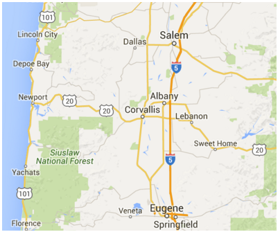
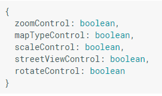

When you start creating a map for your application controls will be an essential piece of the puzzle. The first map below is utilizing the disableDefaultUI: true property. I accomplish this by adding the constructor of the object. You can also create var = mapOptions = { disableDefaultUI: true } to get the same functionality. You'll notice below that all of the UI controls are gone. All of the events, like mouse wheel zoom, double click zoom are still present.
So maybe you don't want to disable all of the controls, but you on want to select certain controls to appear. Well we can cover that as well. Below you will see an image of the mapOptions inside of my map constructor. Each element of control can me flipped on an off by replacing "boolean" with "true/false." This will give you a new level of control on your user experience.
There are times when your control needs surpass the basic level, so we will address some more advanced
topics. You can change the type of control from a button to a drop down and vice versa. They have
lots and lots of options to choose from. Similarly we will pass the arguments in the constructor.
First we need to set mapTypeControl: true and then we can modify the properties associated with
mapTypeControlOptions.
function initMap() {
var map = new google.maps.Map(document.getElementById('map'), {
zoom: 4,
center: {lat: -33, lng: 151},
mapTypeControl: true,
mapTypeControlOptions: {
style: google.maps.MapTypeControlStyle.DROPDOWN_MENU,
mapTypeIds: [
google.maps.MapTypeId.ROADMAP,
google.maps.MapTypeId.TERRAIN
]
}
});
}
There are times you may want to move the controls around the map you are displaying. There are many
locations you can utilize which you can find on their page. I will simply use this area to show
an example.
function initMap() {
var map = new google.maps.Map(document.getElementById('map'), {
zoom: 12,
center: {lat: -28.643387, lng: 153.612224},
mapTypeControl: true,
mapTypeControlOptions: {
style: google.maps.MapTypeControlStyle.HORIZONTAL_BAR,
position: google.maps.ControlPosition.TOP_CENTER
},
zoomControl: true,
zoomControlOptions: {
position: google.maps.ControlPosition.LEFT_CENTER
},
scaleControl: true,
streetViewControl: true,
streetViewControlOptions: {
position: google.maps.ControlPosition.LEFT_TOP
}
});
}